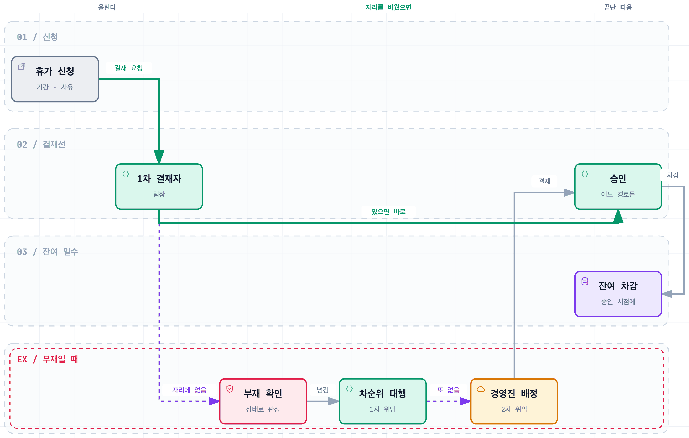

OnWork 그룹웨어 — 휴가 모듈 설계
결재가 멈추지 않게 만드는 설계 과제
Impact
- 14건설계 결정을 ADR 식별자로 남김 (휴가 모듈 3건)
- 12개유스케이스를 구현·엔드포인트·검증까지 한 표로 이어 추적
- 2단결재자가 부재면 대행자에게, 대행자도 부재면 경영진으로 자동 배정
Background
휴가 결재자도 휴가를 갑니다. 결재선을 사람 이름으로 고정하면 그 사람이 자리에 없는 동안 모든 신청이 멈추는데, 사람들이 휴가를 가장 많이 내는 시기가 결재자도 자리에 없는 시기입니다. 설계 산출물로 내는 과제여서 판단의 근거를 문서로 남기는 것이 결과물이었습니다.
Architecture

Contributions
부재 시 자동 대행, 2차까지
결재자가 자리에 없으면 다음 순위가 자동으로 대행하게 했습니다. 한 단계만 위임하면 팀장과 대행자가 같은 기간에 함께 비울 때 다시 멈추기 때문에, 둘 다 부재인 경우 경영진으로 자동 배정되는 2차 위임까지 설계했습니다. 위임은 대기 시간이 아니라 부재 상태로 발동합니다.
판단이 갈린 지점은 문서로
잔여 일수는 승인 시점에 차감하고 취소하면 되돌리며 사용과 취소 이력을 남깁니다. 신청 시점과 승인 시점 중 언제 차감할지는 업무 규칙이라 문서에 명시했습니다. 유스케이스를 구현 클래스와 엔드포인트, 검증 방법까지 한 줄로 잇는 추적표를 만들고 설계 결정 14건을 ADR로 남겼습니다. 2단 위임은 문서로만 두지 않고 LeaveService에 구현까지 했습니다.